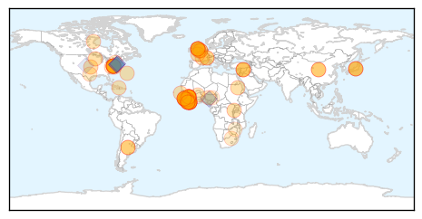
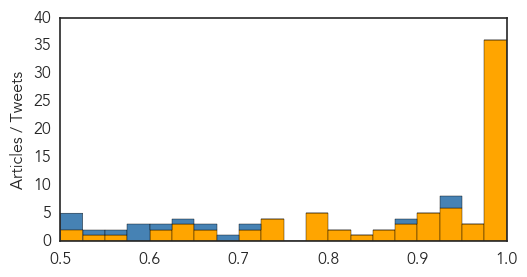

Yellow Fever
30-Day Web Trend
10 alerts, 0 warnings
30-Day Twitter Trend
0 alerts, 0 warnings

Article Locations

Article Confidences

Top Articles:
-
No articles found for Feb 25, 2015
Top Tweets:
-
No tweets found for Feb 25, 2015
Ebola
30-Day Web Trend
0 alerts, 0 warnings
30-Day Twitter Trend
5 alerts, 3 warnings

Article Locations
Article Confidences
Top Articles:
- 1.000
- The “Africanization” of Ebola Harvard Political Review
- 1.000
- Ebola by the Numbers
- 0.999
- Ebola endemic in west Africa remains a risk, scientists warn
- 0.999
- As Ebola wanes, MN sticks with expensive monitoring program
- 0.999
- New Ebola scare as fifth British healthcare worker is flown back to the UK
- 0.999
- UN: Battle to contain Ebola not over
- 0.999
- Six Lessons from the Initial Failed International Response to Ebola
- 0.998
- Ebola detected in Guinea victims, 50 dead
- 0.998
- Third UK health worker admitted to Royal Free in Ebola needle scare
- 0.997
- Sierra Leone reports sharp spike in Ebola cases
- 0.997
- New York doctor who survived Ebola speaks out
- 0.997
- Worries Over Ebola's Sexual Transmission Force Survivors To Make Hard Choices
- 0.996
- Ebola: exposing the failure of international development
- 0.996
- The Connaught Dialysis Unit, Pride of the First Lady Expected to Commence Operations Soon
- 0.996
- Defence Secretary Praises UK Troops for Efforts in Salone
- 0.995
- Schools reopen as Ebola declines — SOS Children
- 0.995
- Simple paper strip test can rapidly diagnose Ebola
- 0.995
- Sierra Leone reports sharp spike in Ebola cases
- 0.993
- New healthcare worker with potential exposure to Ebola brought to UK for precautionary monitoring
- 0.993
- Ebola Situation report 25 February 2015 - Sierra Leone
- 0.992
- Guinea and Cote d’Ivoire to reinforce vigilance against Ebola virus
- 0.992
- North Platte Nebraska's favorite newspaper
- 0.992
- Feature: Guinea in race against time to end Ebola
- 0.992
- AU welcomes back first group of health workers deployed to fight Ebola
- 0.992
- Guinean, Cote d'Ivoire experts urge "more vigilance" over Ebola - Xinhua
- 0.990
- Guinea to eradicate Ebola within 60 day deadline
- 0.990
- Experimental Ebola Drug May Be Effective in Patients in Early Stage of Disease
- 0.990
- AU welcomes back first group of health workers deployed to fight Ebola
- 0.988
- Missionary Who Contracted Ebola Returns to Liberia
- 0.986
- Sierra Leone News : Bo District Scores 42 Days No-Ebola Infection: Sierra Leone News
- 0.983
- Ebola drug shows some promise in first tests in West Africa
- 0.982
- Ebola survivors empower 'hot spot' communities in Sierra Leone to fight virus amid new cases
- 0.980
- 2 Maryland school systems close for snowy roads Wednesday
- 0.980
- Holocaust survivor: I'm alive thanks to Schindler
- 0.979
- US Health & Human Services Delegation to Visit Liberia, Guinea
- 0.977
- Limited promise in early results from Ebola drug trial
- 0.973
- 99 Ebola cases in past week, nearly two-thirds in Sierra Leone
- 0.972
- News, Sports, Jobs, Community - The Leader Herald
- 0.957
- Sierra Leone’s officials break their own ebola emergency laws
- 0.949
- Make outbreak research open access
- 0.944
- WHO's appeal to tackle needs in four crisis-torn nations
- 0.938
- Learning from Ebola, Harvard researchers suggest more open data
- 0.938
- Oxfam to fund Ebola eradication project in West Africa - Xinhua
- 0.929
- Orthodox Church Donates to fight Ebola
- 0.926
- Guinean cleric cleared of assault on Ebola worker
- 0.924
- Now, get tested for Ebola within 10 minutes
- 0.916
- Now, get tested for Ebola within 10 minutes , AniNews.in
- 0.911
- Ebola drug shows some promise in first tests in West Africa
- 0.909
- As Humanitarian Crises Multiply, Maternal Health and Safety of Women Becoming a Focus
- 0.907
- Sierra Leone
Showing top 50 articles...
Top Tweets:
- 0.947
- Ex-Ebola Czar Ron Klain: 5 management lessons from the Ebola outbreak - Fortune http://t.co/C4uUqbQNC5 ebola EVD
- 0.931
- [TELEGRAPH] Ebola Diary: Is it bouncing back? EBOLANEWS
- 0.889
- RT: Ebola Update: 23539 confirmed probable and suspected cases reported in 3 most affected countries with 9541 deaths. EbolaRe…
- 0.713
- Ebola: By the numbers - Al Jazeera America http://t.co/NQ2JnBTr0r ebola EVD
- 0.699
- RT: Guinea: Cases continue2arise from unknown transmission chains. SierraLeone:Ebola transmission remains widespread. http://t.…
- 0.660
- Fearing Ebola N. Korea bars tourists from capital marathon - The Seattle Times http://t.co/yH6nqUj39I ebola EVD
- 0.634
- Pressure mounts on WHO chief over Ebola - CNBC http://t.co/m4dnfgqHUa ebola EVD
- 0.614
- Fear of Ebola's sexual transmission drives abstinence panic - Times LIVE http://t.co/dJ235ZXU4h ebola EVD
- 0.599
- RT: Sierra Leone eyes post Ebola recovery: Six workers have died from Ebola tens of thousands of v... http://t.co/nZPObSvI3e Eb…
- 0.582
- Kennedy Airport passenger has Ebola-like symptoms say authorities - Newsday http://t.co/co8egtq12H ebola EVD
- 0.575
- RT: Piece from shows decline in Ebola across W. Africa notes difficulty in getting to 0-cases 0-transmission http://t…
- 0.563
- RT: There are a number of challenges facing Ebola control writes. One of the wildcards is rain. http://t…
- 0.526
- Traditional Healer Returns to First Ebola-Affected Village - New York Times http://t.co/bdVgBMGVO7 ebola EVD
- 0.521
- Traditional healer called back to remove curse of first Ebola-affected village ... - U.S. News & W... http://t.co/jGwRrvgzGF ebola EVD
- 0.510
- RT: Ebola shut Liberia'n schools but now kids r returning! W/ @UNICEF we prep'd back 2 school kits 2 keep kids healthy http://t.…
- 0.501
- RT: INFOGRAPHIC Updated timeline of the west African Ebola outbreak that has now killed more than 9000 people http://t.co/hVD6nWp36Z